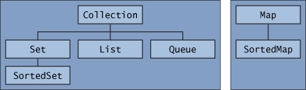

|

The core collection interfaces.
Set is a special kind of
Collection, a SortedSet is a special kind of
Set, and so forth. Note also that the hierarchy consists
of two distinct trees — a Map is not a true
Collection.
Note that all the core collection interfaces are generic. For example,
this is the declaration of the Collection interface.
public interface Collection<E>...
The <E> syntax tells you that the interface is generic. When you declare a Collection instance you can and
should specify the type of object contained in the collection.
Specifying the type allows the compiler to verify (at compile-time) that
the type of object you put into the collection is correct, thus reducing
errors at runtime. For information on generic types, see the
Generics lesson.
When you understand how to use these interfaces, you will know most of what there is to know about the Java Collections Framework. This chapter discusses general guidelines for effective use of the interfaces, including when to use which interface. You'll also learn programming idioms for each interface to help you get the most out of it.
To keep the number of core collection interfaces manageable, the
Java platform doesn't provide separate interfaces for each variant
of each collection type. (Such variants might include immutable,
fixed-size, and append-only.) Instead, the modification operations
in each interface are designated optional — a given implementation
may elect not to support all operations. If an unsupported operation is
invoked, a collection throws an
UnsupportedOperationException.
Implementations are responsible for documenting which of the optional
operations they support. All of the Java platform's general-purpose
implementations support all of the optional operations.
The following list describes the core collection interfaces:
Collection — the root of the collection hierarchy.
A collection represents a group of objects known as its
elements. The Collection interface is the least
common denominator that all collections implement and is used to pass
collections around and to manipulate them when maximum generality is
desired. Some types of collections allow duplicate elements, and others
do not. Some are ordered and others are unordered. The Java platform doesn't
provide any direct implementations of this interface but provides
implementations of more specific subinterfaces, such as Set
and List. Also see
The Collection Interface section.
Set — a collection that cannot contain duplicate elements. This interface models the mathematical set abstraction and is used to
represent sets, such as the cards comprising a poker hand, the courses
making up a student's schedule, or the processes running on a machine.
See also
The Set Interface section.
List — an ordered collection (sometimes called a
sequence). Lists can contain duplicate elements. The user of a List generally has precise control over where in the
list each element is inserted and can access elements by
their integer index (position). If you've used Vector,
you're familiar with the general flavor of List. Also see
The List Interface section.
Queue — a collection used to hold multiple elements
prior to processing. Besides basic Collection operations,
a Queue provides additional insertion, extraction, and inspection
operations.
Queues typically, but do not necessarily, order elements in a FIFO
(first-in, first-out) manner. Among the exceptions are priority queues,
which order elements according to a supplied comparator or the elements'
natural ordering. Whatever the ordering used, the head of the queue is
the element that would be removed by a call to remove or
poll. In a FIFO queue, all new elements are inserted at the
tail of the queue. Other kinds of queues may use different placement
rules. Every Queue implementation must specify its ordering
properties. Also see
The Queue Interface section.
Map — an object that maps keys to values. A
Map cannot contain duplicate keys; each key can map to at
most one value. If you've used Hashtable, you're already
familiar with the basics of Map. Also see
The Map Interface section.
Set and Map:
SortedSet — a Set that maintains its elements in
ascending order. Several additional operations are provided to take
advantage of the ordering. Sorted sets are used for naturally ordered
sets, such as word lists and membership rolls. Also see
The SortedSet Interface section.
SortedMap — a Map that maintains its
mappings in ascending key order. This is the Map analog
of SortedSet. Sorted maps are used for naturally ordered
collections of key/value pairs, such as dictionaries and telephone
directories. Also see
The SortedMap Interface section.
|